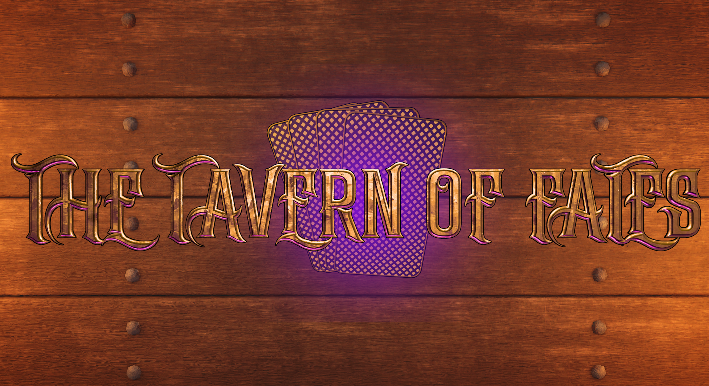
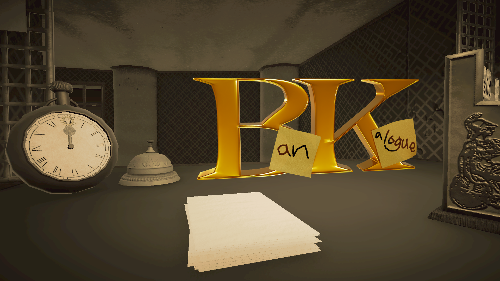
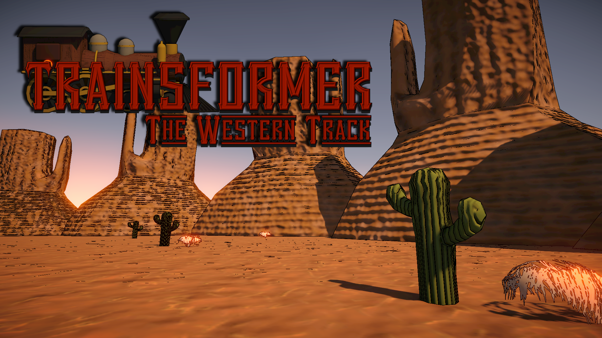

Lucille Violet (They/Them)
Software Engineer · Game Developer · Creative Technologist
Hi! I'm Lucille, a 25-year-old software engineer and game developer born in New Zealand, raised in Singapore, and now living in Sydney, Australia. I'm currently in my third and final year of a Bachelor of Software Engineering (Game Development) at Torrens University, graduating with a GPA of 6.35.
Tech has been a constant thread throughout my life. Growing up across different countries gave me a broad perspective, and an early fascination with how things are built digitally never really left. I've always been drawn to the intersection of logic and creativity: that sweet spot where a well-crafted system meets an experience that genuinely moves people. Game development, for me, is exactly that: a discipline that demands rigorous engineering thinking while leaving room for storytelling, design, and artistry.
Over the course of my degree and collaborative projects, I've built games from the ground up with small teams, written gameplay and AI systems from scratch, and developed a real love for the craft of programming, particularly in C# and Unity, where I've spent the most time. I'm drawn to the challenge of designing systems that feel intuitive for players while remaining clean and maintainable under the hood.
I also keep a close eye on the rapidly evolving world of AI, from large language models to AI agents and the broader implications of where the technology is heading. It's an area I find genuinely exciting, and staying current with it feels less like homework and more like keeping up with something I care about.
Outside of all that, I have a soft spot for the meticulous world of LaTeX and enjoy exploring web technologies to keep my skills sharp across the stack. Whether it's a canvas-animated portfolio or a Victorian banking sim, I bring the same curiosity and care to whatever I'm building.

🎴 The Tavern of Fates
A deck-driven roguelike where you wager your lifespan to bend fate through tarot cards, dice rolls, and branching choices. Built in Unity to explore strategy and narrative systems.

🖋️ (B)An(K)alogue
A Victorian-era banking sim focused on note-taking, deposits/withdrawals, and serving customers under time pressure. Built in Unity to explore systems-driven gameplay.

🚂 Trainsformer: The Western Track
A turn-based JRPG prototype where you outthink adaptive machine enemies using move types, timing, and strategy. Built in Unity to explore AI-driven combat systems and player counter-play.